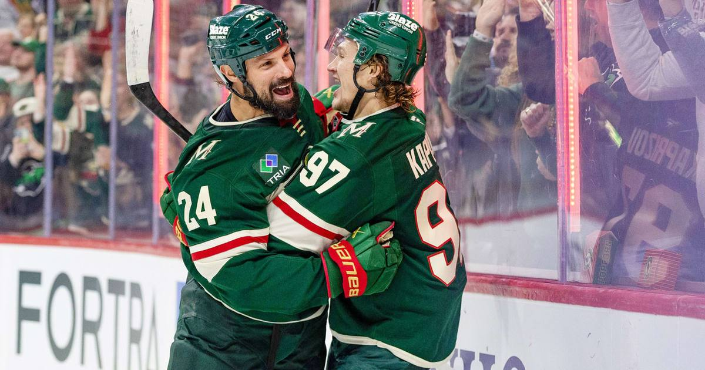

Wild are the fastest team in NHL history to 1,000 wins as Kaprizov drops four points on the Sharks
Kirill Kaprizov scored his league-leading 16th goal and added three assists in a 4-1 win over San Jose, making Minnesota the fastest franchise in NHL history to 1,000 regular-season wins — 1,995 games, 23 fewer than the old mark.

Disclosure: this post contains affiliate links. I earn a commission on qualifying purchases.
Kirill Kaprizov scored his NHL-leading 16th goal and added three assists as the Minnesota Wild beat the San Jose Sharks 4-1 on Friday, November 6, 2026, at Grand Casino Arena in St. Paul — and the win put the Wild in the NHL record book. Minnesota became the fastest franchise in league history to reach 1,000 regular-season wins, getting there in 1,995 games.
The old mark belonged to the Philadelphia Flyers, who needed 2,018 games. The Wild beat it by 23.
How the game played out
Kaprizov opened the scoring on a 5-on-3 power play at 7:55 of the first period, beating Yaroslav Askarov five-hole with a one-timer from the right circle off a cross-ice feed from Quinn Hughes. It was Kaprizov's 16th goal of the season, the most in the NHL, and it set the tone for a night where Minnesota never trailed.
Macklin Celebrini tied it midway through the second period with his seventh goal of the season, but the Wild answered with three unanswered goals. Maxim Shabanov broke the 1-1 tie with a power-play goal at 14:15 of the second — his sixth of the season — and Hughes made it 3-1 at 6:54 of the third before Zach Bogosian capped the scoring at 13:58 with his first point of the season. Jesper Wallstedt made 23 saves as Minnesota improved to 5-0-1 at home.
Kaprizov had a hand in all four goals. Hughes finished with a goal and two assists of his own.
The 1,000-win club, on fast forward
The Wild joined the NHL as an expansion team for the 2000-01 season, which makes the pace of this milestone the story. One thousand wins in 1,995 games means Minnesota reached the mark faster than every Original Six franchise and every expansion team that came before it — including the Flyers, whose 2,018-game path stood as the standard.
It is a franchise record built on consistency more than dominance. The Wild have never won a Stanley Cup and have only reached the conference final once, but they have been one of the league's steadiest regular-season outfits for a quarter century. Mikko Koivu, captain for 11 seasons, still holds the franchise records for games played (1,028), assists (504), and points (709). Kaprizov, now in his seventh NHL season, is already the franchise's all-time goals leader with 246 — and after Friday night, he sits at 505 career points in 415 games.
The current team is the best version of that steady identity. At 12-3-3, Minnesota owns the best record in the Western Conference and the second-best mark in the NHL. The Wild are 6-0-1 in their past seven games and have won three straight.
Kaprizov is running away with the scoring race
The four-point night extended Kaprizov's point streak to seven games, during which he has five goals and eight assists for 13 points. He leads the NHL with 16 goals, and the Wild are 10-1-1 this season when he scores — and 10-0-3 when they score first, which they have now done 13 times in 18 games.
He is not carrying the team alone, either. Hughes has a seven-game point streak of his own (four goals, eight assists) and has recorded a point in 16 of 18 games this season. Four Wild players — Kaprizov, Hughes, Matthew Boldy, and Joel Eriksson Ek — are all riding seven-game point streaks at the same time.
The Sharks, meanwhile, are going the other way. San Jose fell to 7-10-1 with its fourth straight loss, scoring two or fewer goals in each game of the skid. Minnesota is 8-0-3 in its last 11 games against the Sharks, earning at least a point in every one of them.
What it means
A thousand wins is a franchise milestone, not a championship, and nobody in Minnesota will pretend otherwise. But the pace of it — fastest ever — says something real about how this organization has operated since day one: rarely bad, often good, and right now, genuinely dangerous. The Wild host the Tampa Bay Lightning on Saturday night, and the team chasing them in the West should be watching.
Sources
• Wild become fastest franchise to win 1,000th NHL regular-season game (Daily Faceoff)
• Kaprizov scores again, adds three assists in Wild win against Sharks (NHL.com)
• Kirill Kaprizov and the Wild just made NHL history (Minnesota Hockey Insider)
• Kaprizov has NHL-leading 16th goal, adds 3 assists to lead Wild past Sharks (Sportsnet)
• Kirill Kaprizov's 4-point effort sparks Wild over Sharks (Reuters)
Gear up: Fanatics